Pofu’nun dünyası “AI” gibi durmasın
Aynı sahne, orijinal ve dört farklı işlem: senin seçtiğin yumuşak ada (take 1), çay ocağı L1 ve L2, ve Pofu. Hepsi aynı kaynak görsellerden; sadece “stil kilidi” adımı değişiyor. Yeni görsel üretilmedi.
Kısa cevap
- Yumuşak kilit (Öneri): Pofu’ya dokunma; ada ve ocakları onun açıklığına, doygunluğuna ve ışığına çek, ince dokuyu yarıya indir.
- Asıl düzeltme kaynakta: yeni prompt blokları mat, sade ve alçak kameralı çizim istiyor. Kilit sadece son rötuş.
- Daha düz stile filtreyle geçilmez (B ve C): “filtre” gibi görünüyor ve Pofu’nun büyüsünü öldürüyor.
Orijinal
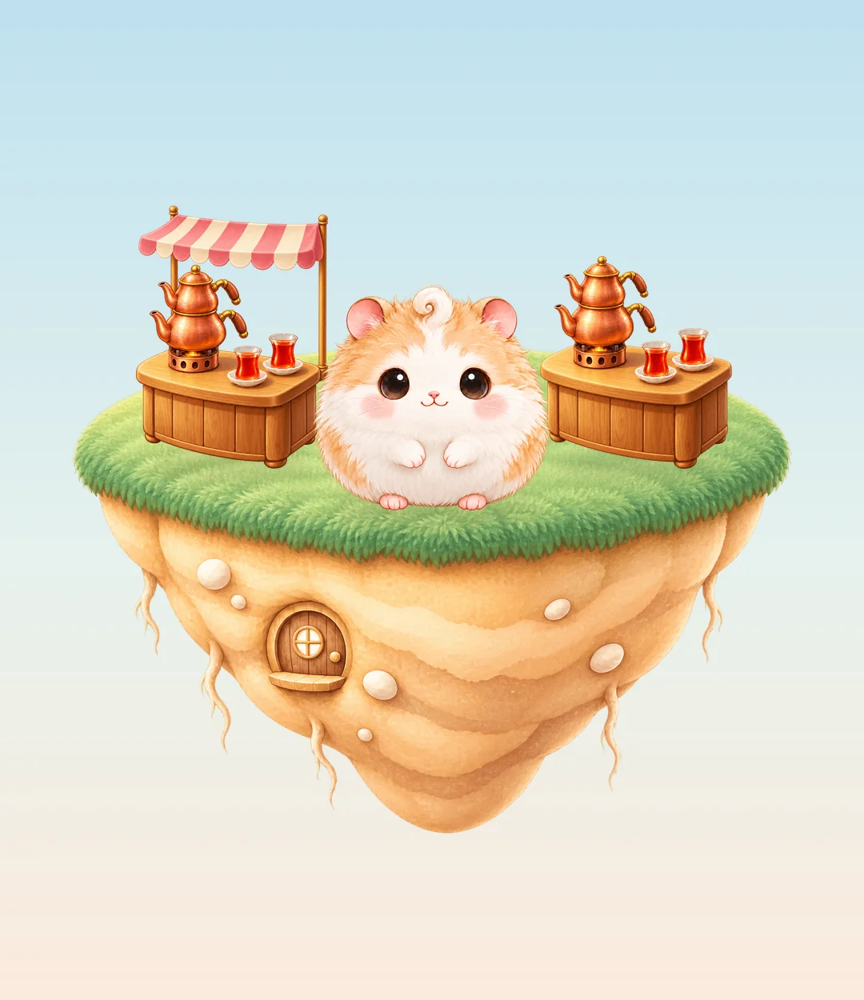
Ada ve Pofu yumuşak; ocak ise koyu, çok doygun ve parlak bakır: “mobil oyun render’ı”. Göz önce ocağa gidiyor, Pofu’ya değil.
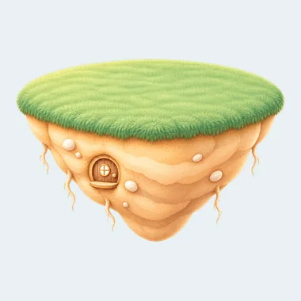
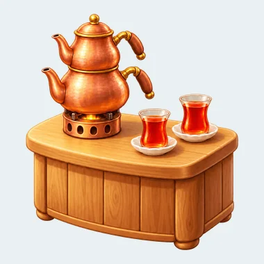
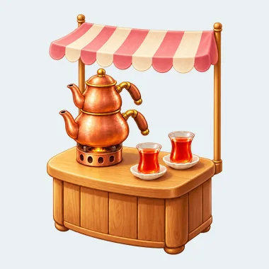
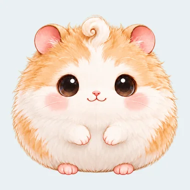
A · Uyumla
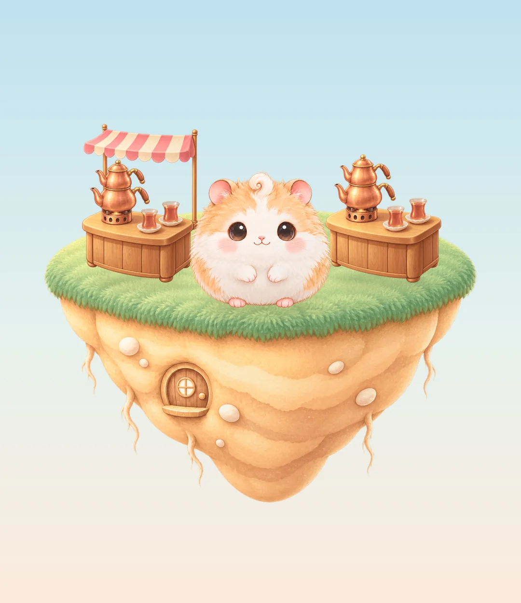
Renk ve ışık birleşti, ama doku aynı kaldı: dövme bakır, ahşap damarı ve parlamalar hâlâ “AI” diye bağırıyor. Pofu değişmiyor (iyi).
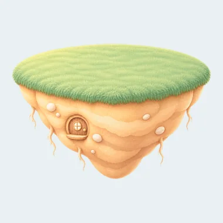
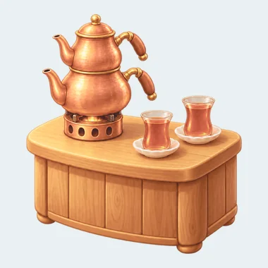
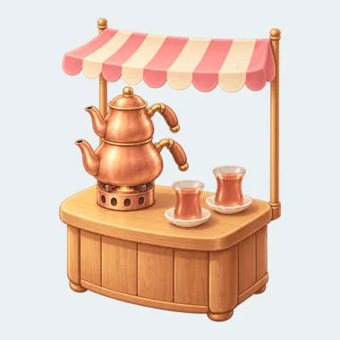
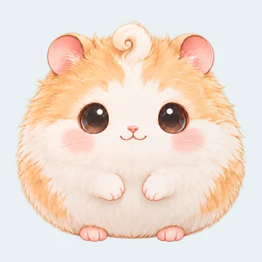
B · Guaj sadeleştirme
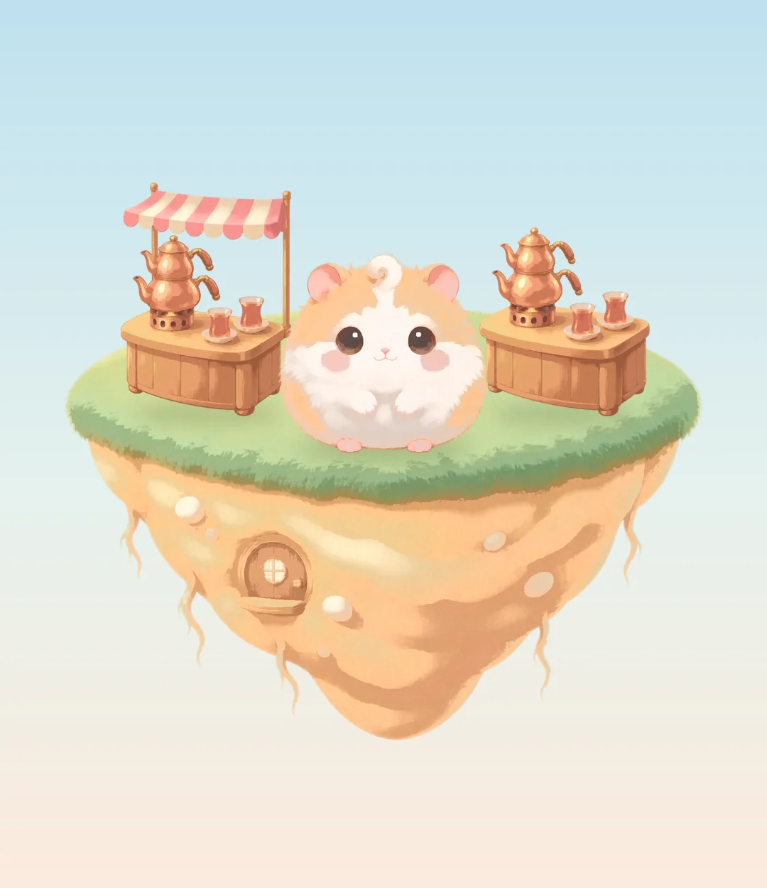
Detay gitti ama yerine “filtre” izi geldi: lekeli bantlar, çamurlu geçişler. Pofu’nun tüyü keçe gibi oldu; büyüsü kayboldu.
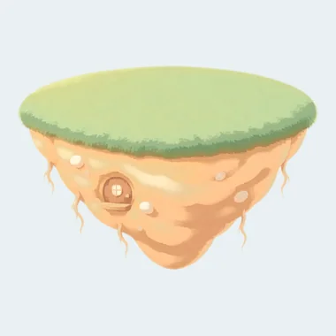
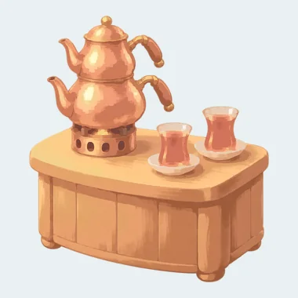
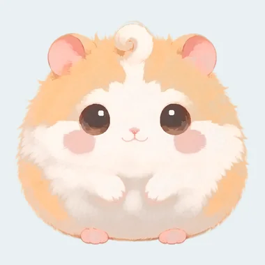
C · Masal kitabı düz
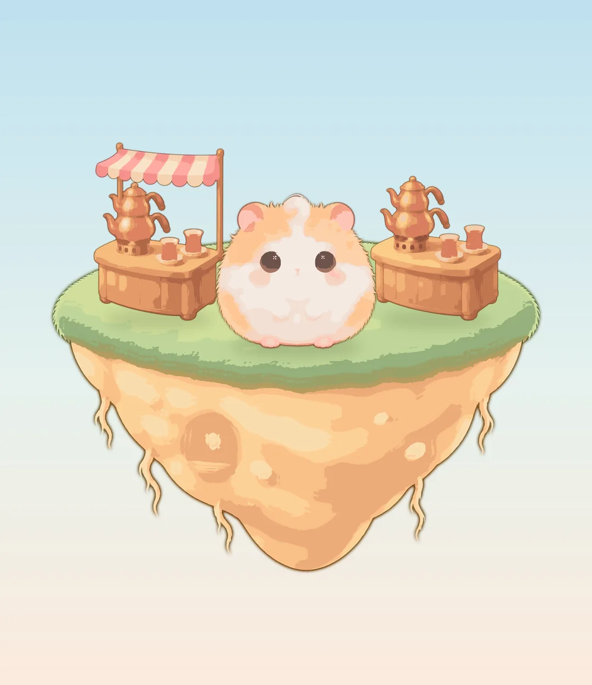
En tutarlı dünya, ama başka bir oyun: Pofu’nun göz parıltısı ve tüyü gidiyor, ocak oyuncak çıkartmaya dönüyor. Bu stil filtreyle değil, baştan çizimle olur.
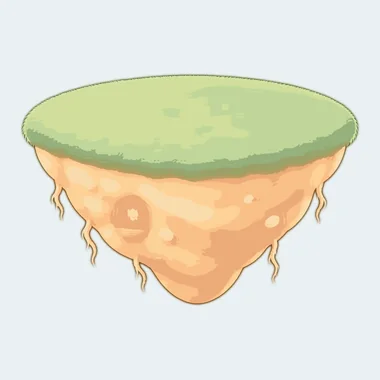
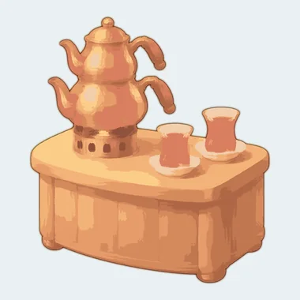
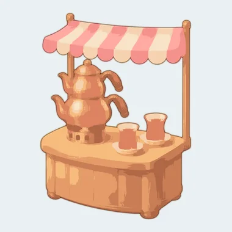
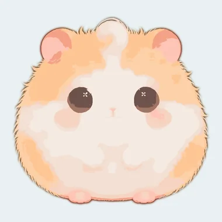
Yumuşak kilit öneri
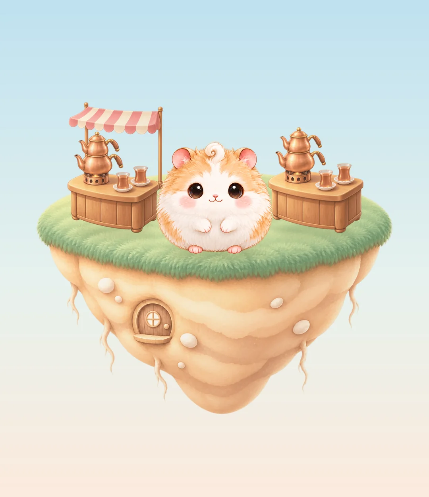
Pofu aynen kalıyor; ocak ve ada onun ışığına, değerlerine ve doygunluğuna çekiliyor. Mikro doku yarıya iniyor, şekil ve malzeme okunuyor. Dünya tek elden çıkmış gibi.
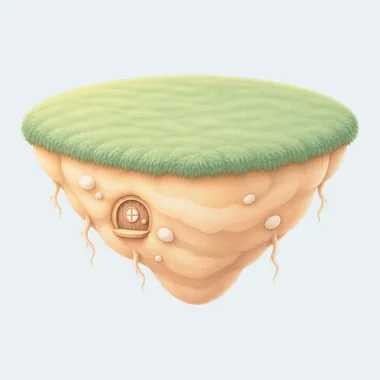
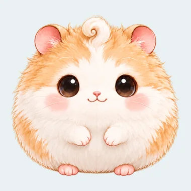
Yakın plan: “AI izi” nerede?
Dövme bakır, her kıvrımda parlayan noktalar, her yüzeyde aynı yoğunlukta doku: insan ressam bunları bu boyutta çizmez, model hep çizer. 130 pt’lik bir ocakta bu doku telefonda kıpır kıpır gürültüye dönüşür.
Bakır demlik
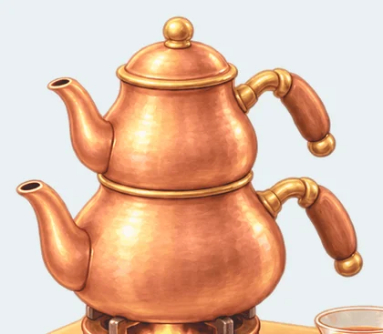
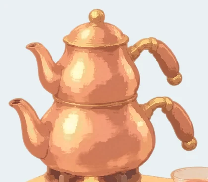
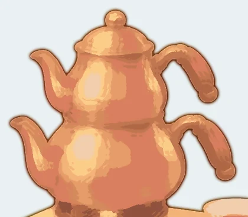
Çim kenarı
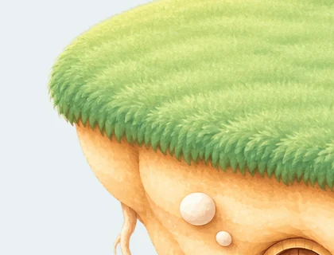
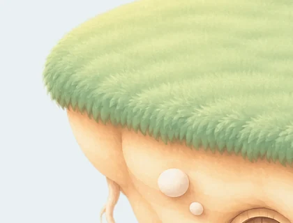
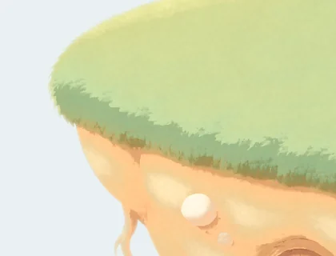
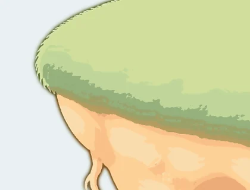
Ölçümler: hedef Pofu
Açıklık 0 (siyah) ile 100 (beyaz) arası. Doy. = doygunluk (renk yoğunluğu); kilitli paletimizin en doygun rengi 49. “Detay”, nesne telefondaki boyutuna küçültülünce kalan ince doku.
Çay ocağı L1
| Koyu uç | Orta ton | Doy. | Doy. üst | Detay | |
|---|---|---|---|---|---|
| Pofu (hedef) | 59 | 89 | 12 | 51 | 5.2 |
| Orijinal | 27 | 56 | 61 | 82 | 7.3 |
| A · Uyumla | 39 | 62 | 49 | 53 | 5.9 |
| B · Guaj | 47 | 68 | 42 | 45 | 3.5 |
| C · Düz | 51 | 64 | 42 | 46 | 2.4 |
| Öneri | 42 | 63 | 42 | 46 | 4.6 |
Ada (take 1)
| Koyu uç | Orta ton | Doy. | Doy. üst | Detay | |
|---|---|---|---|---|---|
| Pofu (hedef) | 59 | 89 | 12 | 51 | 5.2 |
| Orijinal | 52 | 80 | 46 | 52 | 5.6 |
| A · Uyumla | 59 | 82 | 38 | 46 | 4.5 |
| B · Guaj | 61 | 84 | 33 | 39 | 2.0 |
| C · Düz | 65 | 83 | 35 | 40 | 1.7 |
| Öneri | 60 | 82 | 30 | 37 | 3.0 |
Ocak orijinalde Pofu’dan çok daha koyu (koyu uç 27’ye karşı 59) ve neredeyse iki kat doygun. Öneri onu palet aralığına çekiyor ve ince dokuyu Pofu’nun seviyesine indiriyor; şekil ve malzeme ayrımı kalıyor.
Hedef ada oranı (önizleme)
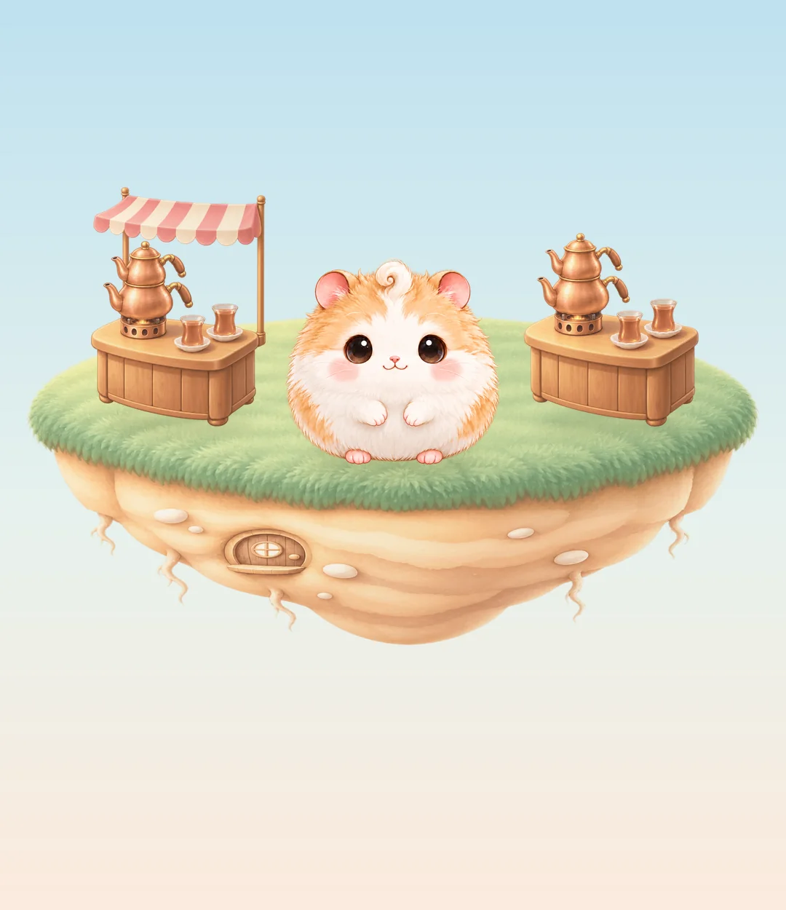
Bu bir çizim değil, sadece oran taslağı: çim daha geniş, toprak gövde yarı yarıya sığ. Gerçek düzeltme yeni prompt ile gelecek (ada ve ocaklar için kamera da aynı açıya iniyor).
Sırada ne var
- Yeni promptlar hazır: ada (daha geniş, daha sığ, adaçayı yeşili), çay ocağı L1–L5, ayçiçeği bahçesi L1–L2, simit arabası, Mochi ve 12 arayüz görseli. Hepsi bu sayfadaki yumuşak kilide göre yazıldı.
- Üretim henüz başlamadı: önce senin hesap kararın (kendi ChatGPT planın Codex ile ya da kendi API anahtarın) ve 7 günlük deneme bitecek. Üretim yalnızca senin kendi hesabında yapılır; her görselin kaydında hesap sahibi yazar.
- Sen seçersin: her parti için tek bir “temas sayfası” (contact sheet); beğendiğin denemenin numarasını söylemen yeterli.
- Tek ince ayar kuralı: kilidin hiçbir ayarı, önce/sonra karşılaştırması olmadan değişmez.